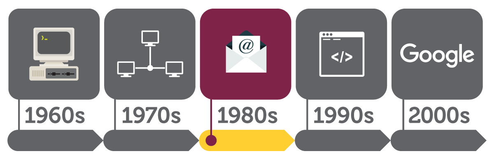

Raymond Tomlinson invented e-mail in 1971, he developed the first system able to send mail between users on different hosts across the ARPANET, using the @ sign to link the user name with a destination server. Dave Farber of the University of Delaware reveals a project to build an inexpensive network using dial-up phone lines. In 1982, the PhoneNet system is established and is connected to ARPANET and the first commercial network, Telenet. This broadens access to the internet and allows for email communication between multiple nations of the world. In 1981, Metcalfe’domain is registered: symbolics.com, a domain belonging to a computer manufacturer. s company 3Com announces Ethernet products for both computer workstations and personal computers; this allows for the establishment of local area networks (LANs). Paul Mockapetris, Jon Postel and Craig Partridge create the Domain Name system, which uses domain names to manage the increasing number of users on the internet. In 1985, the first domain is registered: symbolics.com, a domain belonging to a computer manufacturer.
While many people credit Kevin MacKenzie with the invention of the emoticon in 1979, it was Scott Fahlman in 1982 who proposed using 😊 after a joke, rather than the original -) proposed by MacKenzie. The modern emoticon was born.